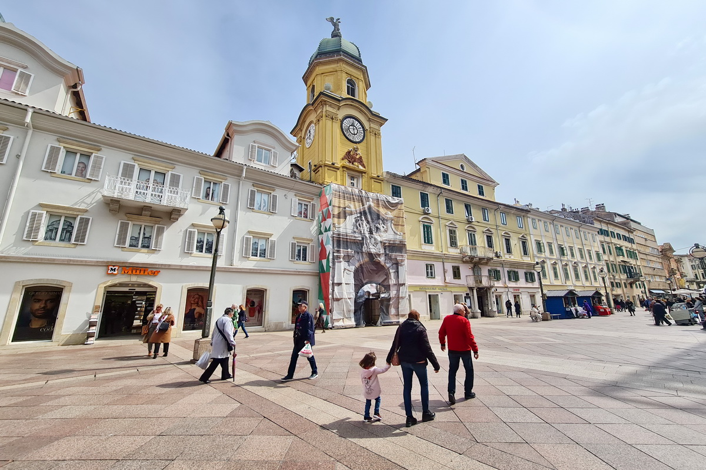
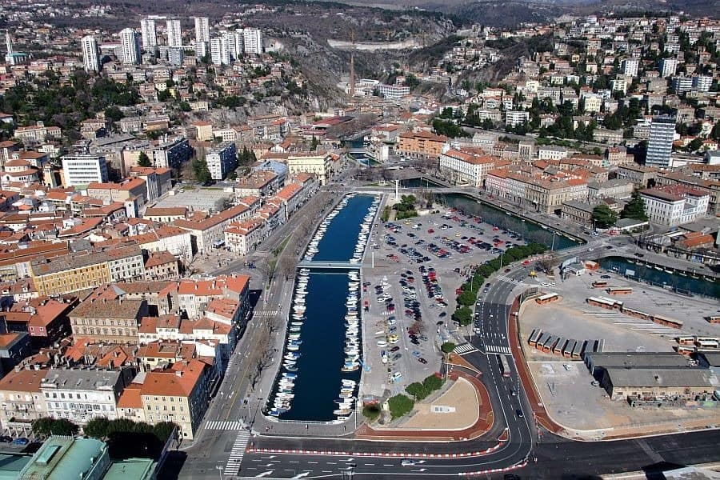

Projektni praktikum, Rijeka Projekt
Sve na jednom mijestu
Istražite sve najnovije vjesti o gradu Rijeci, sve najaktualnije događaje i ostale zanimljive informacije, sve na jednom mijestu.


Od Zameta do Delte
Pretražite sva naselja grada Rijeke. Sve granice, broj stanovnika i ostale informacije na interaktivnoj karti Rijeke. Također provjerite stanje svih glavnih parkirnih pozicija u cijelom gradu Rijeci